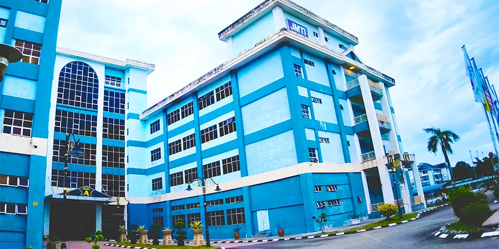

01
Hardware Clinic
Bawa mesin yang bermasalah atau bina satu dari komponen. Kami mulakan dengan pemeriksaan, bukan tekaan.
Kelab
Kelab pelajar JMTI untuk web, perkakasan dan sistem.

Siapa kami
Kami mengumpulkan pelajar yang ingin memahami teknologi dengan tangan. Setiap sesi bermula dengan soalan, dan berakhir dengan sesuatu yang boleh diuji.
Setiap minggu
Jadual sebenar diumumkan melalui kelab. Ini bentuk kerja yang kami lakukan.
01
Bawa mesin yang bermasalah atau bina satu dari komponen. Kami mulakan dengan pemeriksaan, bukan tekaan.
02
Satu skop kecil, satu tempoh singkat. Habiskan antara muka yang boleh digunakan, kemudian semak bersama.
03
Pemasangan sistem, pemacu dan konfigurasi asas. Fokus pada sistem yang stabil dan boleh diulang.
04
Baca log, ulang ujian dan tulis penemuan. Belajar menerangkan masalah dengan bukti.
Cara menyertai
Pendaftaran bermula dengan borang. Selepas itu, penasihat kelab akan mengesahkan langkah seterusnya.
Buka borangUntuk siapa
Tiada pengalaman diperlukan. Datang dengan rasa ingin tahu dan satu soalan.
Jika anda suka membina antara muka atau memasang PC, bawa projek anda ke meja kami.
Jika anda suka mencari punca masalah, meja diagnostik sentiasa terbuka.
Sertai
Bengkel, sprint dan sesi pembaikan dijalankan di makmal JMTI. Tiada syarat pengalaman.
Daftar minat